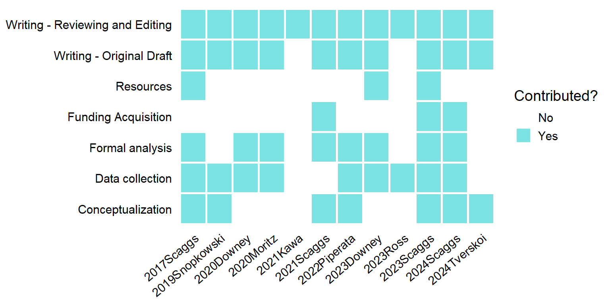

| Year | Institution | Program | Degree |
|---|---|---|---|
| 2021 | Ohio State University | Anthropology | PhD candidate |
| 2018 | Oregon State University | Applied Anthropology | Master of Science |
| 2016 | Boise State University | Anthropology | Bachelor of Science |
Shane A. Scaggs
Presidential Fellow
Human Complexity Lab
Department of Anthropology
The Ohio State University
scaggs.32@osu.edu
Research Interests
Cooperative Networks \(\times\) Landscape Mosaics \(\times\) Food Webs \(\times\) Ecological Anthropology \(\times\) Complex Systems \(\times\) Community and Landscape Ecology \(\times\) Computational Social Science \(\times\) Network Science
Education
Publications
| Year | Citation |
|---|---|
| In review | Scaggs, S. A., Downey S. S. Graduated sanctions, common pool resource management, and the social organization of labor in swidden agriculture. Current Anthropology. |
| In prep | Scaggs, S. A., Wu, X., Syed, Z., Nabors, S., Allred, J., Qin, R., Downey, S. S. A comparative analysis of the swidden agriculture, landscape structure, and ecosystem enhancement. |
| In prep | Scaggs, S. A. The Role of Humans in a Neotropical Food Web. |
| 2024 | Tverskoi, D., Scaggs, S. A., Downey, S. S. A complex adaptive systems model of labor reciprocity and normative reasoning in swidden agriculture. bioRxiv,Cold Spring Harbor. https://www.biorxiv.org/content/early/2024/12/15/2024.12.12.628215.full.pdf |
| 2023 | Ross, C. T., Hooper, P., Smith, J. E., [and 101 others, including Scaggs, S. A.] Reproductive Inequality in Humans and Other Mammals. Proceedings of the National Academy of Sciences,120(22) e2220124120. https://doi.org/10.1073/pnas.2220124120 |
| 2023 | Downey, S. S., Walker, M., Moschler, J., Penados, F., Peterman, W., Rongjun, Q., Scaggs, S. A., Song, S. An intermediate level of disturbance with customary agricultural practices increases species diversity in Maya community forests in Belize. Communications Earth and Environment,4(428). https://doi.org/10.1038/s43247-023-01089-6 |
| 2022 | Piperata, B., Scaggs, S. A., Dufour, D., Adams, I. Measuring food security: An introduction to tools for human biologists and ecologists. American Journal of Human Biology,35(2). https://doi.org/10.1002/ajhb.23821 |
| 2021 | Scaggs, S. A., Gerkey, D., McLaughlin, K. Linking subsistence harvest diversity and productivity to adaptive capacity in an Alaskan food sharing network. American Journal of Human Biology. Special Issue: Anthropological Insights on Adaptation and Climate Change,33(4): e23573. https://doi.org/10.1002/ajhb.23573 |
| 2021 | Kawa, N., Arceno, M. A., Goeckner, R., Hunter, C., Rhue, S., Scaggs, S. A., Biwer, M., Downey, S., Field, J., Gremillion, K., McCorriston, J., Willow, A., Newton, E., Moritz, M. Training Wicked Scientists for a World of Wicked Problems. Humanities and Social Sciences Communications,8(189). https://doi.org/10.1057/s41599-021-00871-1 |
| 2020 | Downey, S., Gerkey, D., Scaggs, S. A. The Milpa Game: a field experiment investigating the social and ecological dynamics of Q'eqchi' Maya swidden agriculture. Human Ecology,48(4). https://doi.org/10.1007/s10745-020-00169-x |
| 2020 | Moritz, M., Scaggs, S. A., Shapiro, C., Hinkelman, S. Comparative Study of Territoriality across Forager Societies. Human Ecology,48(2). https://doi.org/10.1007/s10745-020-00141-9 |
| 2019 | Snopkowski, K., Demps, K., Scaggs, S. A., Griffiths, R., Fulk, K., May, S., Neagle, K., Downs, K., Eugster, M., Amend, T., Heath, J. Small Group Learning is Associated with Reduced Salivary Cortisol and Testosterone in Undergraduate Students. Journal of the Scholarship of Teaching and Learning,19(5). https://doi.org/10.14434/josotl.v19i5.24230. |
| 2017 | Scaggs, S. A., Fulk, K., Glass, D. J., Ziker, J. P. Framing charitable solicitation in a behavioral experiment: Cues derived from evolutionary theory of cooperation and anthropological economics. In Li, M., Tracer, D. P. (eds.) Interdisciplinary Perspectives on Fairness, Equity, and Justice, 153-178. Springer. https://doi.org/10.1007/978-3-319-58993-0_10 |
Contributions

Awards, Fellowships, and Funding Support
| Year | Funding |
|---|---|
| 2025 | Scaggs, S. A. DEM3 Anthropology Research and Development Fund. Department of Anthropology. The Ohio State University |
| 2024 | Scaggs, S. A. Presidential Fellowship, The Ohio State University. |
| 2021 | Downey, S. S. (PI), Scaggs, S. A. (Co-PI). Doctoral Dissertation Research: Subsistence Hunting in an Anthropogenic Swidden Landscape in Southern Belize. Cultural Anthropology Program, National Science Foundation. $31,500. |
| 2019 | Scaggs, S. A. Daniel T. Hughes Memorial Fund. Department of Anthropology, The Ohio State University. $300. |
| 2019 | Scaggs, S. A. Pre-Dissertation Field Research Grant. Tinker Foundation, College of Latin American Studies, The Ohio State University. $1,750. |
| 2018-2023 | Scaggs, S. A. Graduate Research Fellowship. Graduate Research Fellowship Program, National Science Foundation. 2018-2023. |
| 2018 | Scaggs, S. A. Graduate Research and Writing Residency. Spring Creek Project, Oregon State University. $250. |
| 2015 | Scaggs, S. A., Glass, D. J. Special Undergraduate Recognition Award. Evolutionary Anthropology Society, American Anthropological Association. $250. |
Conference Proceedings
| Year | Presentation |
|---|---|
| 2025 | Scaggs, S. A. Comparing the structure of swidden agricultural mosaics throughout the world's tropical forests. 94th Annual Meeting, American Association of Biological Anthropologists, Baltimore, MD. Poster. |
| 2024 | Scaggs, S. A. Intermediate-scale swidden disturbances increase forest diversity in Inidgenous Maya community forests. 84th Annual Meeting, Society for Applied Anthropology, Santa Fe, NM. Podium. |
| 2023 | Scaggs, S. A. Human Influences on the Structure of Central American Food Webs. 83rd Annual Meeting, Society for Applied Anthropology, Cincinnati, OH. Podium. |
| 2021 | Scaggs, S. A., Shen, A., Downey, S. S. The Importance of Humans in Neotropical Food Webs. Fall Forum 2021, Translational Data Analytics. Poster. |
| 2021 | Scaggs, S. A., Gerkey, D. Subsistence harvest diversity, social networks, and adaptive capacity to environmental change in Alaska. 90th Annual Meeting, American Association of Biological Anthropologists, Virtual. Invited Symposium. |
| 2019 | Scaggs, S. A. Playing 'The Milpa Game': Using field experpiments to investigate common pool resource dilemmas in Toledo District, Belize. 118th Annual Meeting, American Anthropological Association. Vancouver, BC. Podium. |
| 2018 | Scaggs, S. A. Subsistence harvest productivity and biodiversity in Alaskan social networks. 117th Annual Meeting, American Anthropological Association. San Jose, CA. Podium. |
| 2018 | Scaggs, S. A. Exponential random graph modeling of productivity, diversity, and reciprocity in Alaskan food sharing networks. 5th Annual Northwest Evolution, Ecology, and Human Behavior Symposium. Boise, ID. Poster. |
| 2017 | Scaggs, S. A., Gerkey, D. Dynamic Change, Social Networks, and Harvests: Levels of Resilience in Alaska. 29th Annual Meeting, Human Behavior and Evolution Society. Poster. |
| 2017 | Snopkowski, K., Demps, K., Scaggs, S. A., Griffiths, R. Fulk, K. S., May, S., Neagle, K., Downs, K., Eugster, M., Amend, T .Stress: The effects of social and solitary learning on salivary hormones. 29th Annual Meeting, Human Behavior and Evolution Society. Boise, ID. Poster. |
| 2016 | Scaggs, S. A. The Solicitation of Charitable Donations: Experimental Evidence from Behavioral Economic Games. Boise State University Undergraduate Research Conference. Podium. |
| 2016 | Scaggs, S. A., Glass, D. J. Understanding Charitable Donations. Boise State University Advancement Team. Invited Talk. |
| 2016 | Snopkowski, K., Demps, K., Scaggs, S. A., Griffiths, R. Fulk, K. S., May, S., Neagle, K., Downs, K., Eugster, M., Amend, T. Endocrine stress response in college students to solitary and group learning. 4th Northwest Evolution, Ecology, and Human Behavior Symposium. Boise, ID. Poster. |
| 2016 | Scaggs, S. A., Glass, D. J., Ziker, J. Four Pathways to Generosity. 4th Northwest Evolution, Ecology, and Human Behavior Symposium. Boise, ID. Poster. |
| 2015 | Scaggs, S. A., Glass, D. J. Four Pathways to Generosity: Evolutionary Mechanisms Differentially Affect Charitable Donations. 114th Annual Meeting, American Anthropological Association. Denver, CO. Podium. |
Teaching Experience
| Term | Course | Institution | Level |
|---|---|---|---|
| Spring 2023 | Data Science for Anthropology | Ohio State University | 8000 |
| Summer 2022 | Introduction to Cultural Anthropology | Ohio State University | 2000 |
| Spring 2018 | Human Evolution | Oregon State University | 4000 |
| Winter 2018 | Anthropology, Health, and Environment | Oregon State University | 3000 |
| Autumn 2017 | Comparative Cultures | Oregon State University | 2000 |
| Spring 2017 | Human Evolution | Oregon State University | 4000 |
| Winter 2017 | Comparative Cultures | Oregon State University | 2000 |
| Autumn 2016 | Comparative Cultures | Oregon State University | 2000 |
Service and Outreach
| Year | Role |
|---|---|
| 2022-2025 | Reviewer. Human Ecology. |
| 2023 | Reviewer. NSF Arctic Social Sciences Program. |
| 2023 | Session Chair, "Cultural practices and social organization shape community responses to environmental and ecological shocks ", Society for Applied Anthropology, Cincinnati, OH. |
| 2020-2023 | Founder. Social Ecological Networks Groups (SENG). A collective learning and research group focused on using R and Python to study Social Ecological Networks. https://seng.netlify.app |
| 2020 - 2021 | Podcast host, "A Story of Us, Ohio State Anthropology Public Outreach Program |
| 2019 | Session Chair, "Precariously in Place: Ecological Knowledge and Navigating Climate Change", Anthropology and Environment Society, 118th American Anthropological Association Meeting, Vancouver, BC |
| 2017 | Conference Volunteer, 29th Human Behavior and Evolution Society Meeting, Boise, ID |
| 2016 | Symposium Volunteer, 4th Northwest Evolution, Ecology, and Human Behavior Symposium, Boise, ID |
| 2015 | Symposium Volunteer, 3rd Northwest Evolution, Ecology, and Human Behavior Symposium, Boise, ID |
| 2015 | Volunteer Field Assistant, Golden eagle banding and nestling survey, Boise State University, Department of Biological Sciences |
| 2015 | Volunteer Field Assistant, Barn owl banding and nestling survey, Boise State University, Department of Biological Sciences |
| 2015 | Conference Volunteer, 81st American Physical Anthropology Assocation Meeting, Portland, OR |
| 2012 | Conference Volunteer, 114th American Anthropological Association Meeting, Denver, CO |